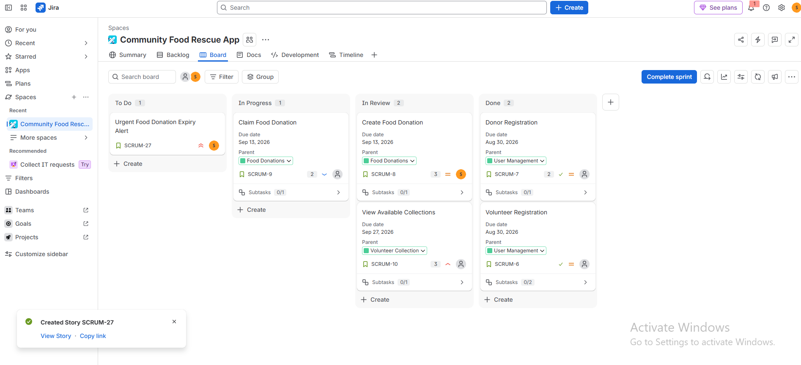

Technical skills
HTMLCSSJavaScriptSQLC# foundationsMicrosoft ExcelAzure Data FundamentalsGit & GitHubAtlassian Jira
I’m Simphiwe Sethole, a BCom Information Systems student building practical skills across data, software and Agile delivery.

01 / About
I am a second-year BCom Information Systems student at the University of Johannesburg, working toward a career in data engineering.
My journey started with coding and grew into an interest in the systems that collect, organise and move data. I enjoy turning ideas into practical solutions, working with others and learning through hands-on projects.
02 / Capabilities
A growing toolkit grounded in practical coursework, certifications and team projects.
03 / Selected work
Working files are included inside this offline portfolio package.
A responsive student-support prototype created with a four-person team in a two-hour sprint. It includes smart routing, support tickets, digital queues and bus tracking.
A weighted Excel model comparing five municipal digital-transformation proposals, with formulas, automatic ranking, conditional formatting and a recommendation dashboard.

Applied Agile/Scrum practices in Jira to prioritise stories, assign tasks, monitor sprint progress and manage work through a clear delivery workflow.
All three project buttons work directly from the extracted folder without a web server.
04 / Education
University of Johannesburg · Expected completion 2027
DP-900 · Microsoft
Advanced Information Literacy · Artificial Intelligence in the Fourth Industrial Revolution · MS Excel for the Workplace
05 / Experience
University of Johannesburg · 2026
Helped fellow students identify campus locations and reach the correct facilities. This strengthened my communication, service mindset and ability to provide clear guidance.
06 / Contact
I’m open to internships, graduate opportunities and collaborative projects in data, technology and information systems.
{kind=link}